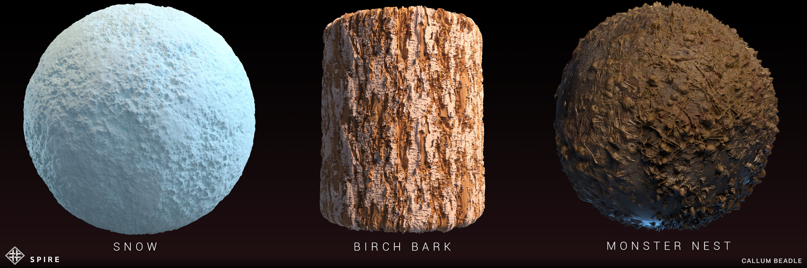
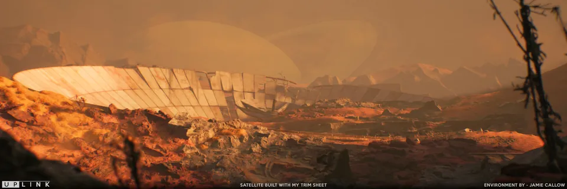
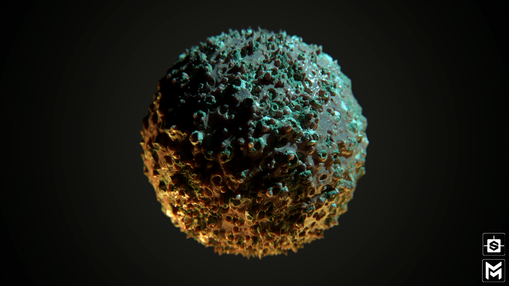
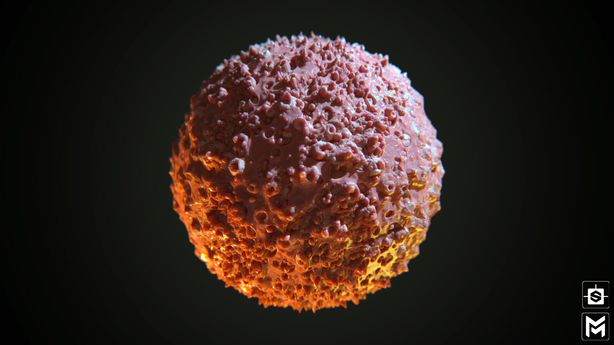
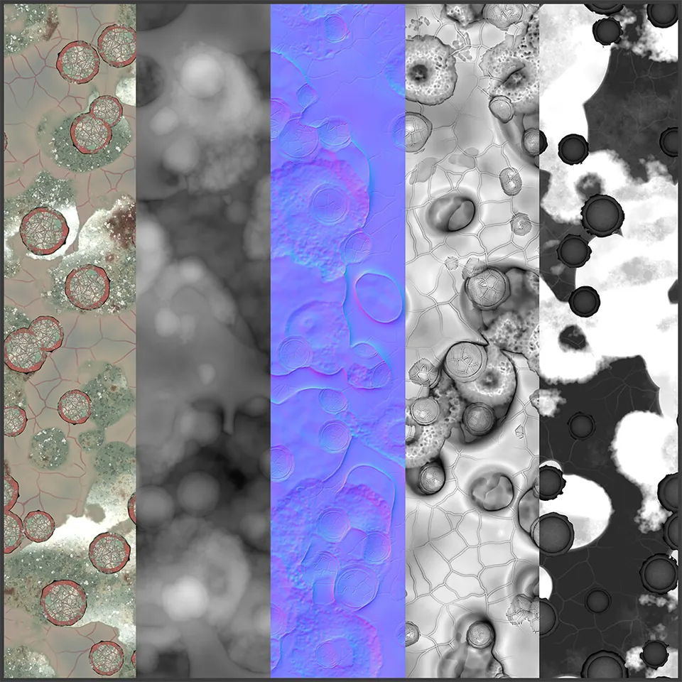
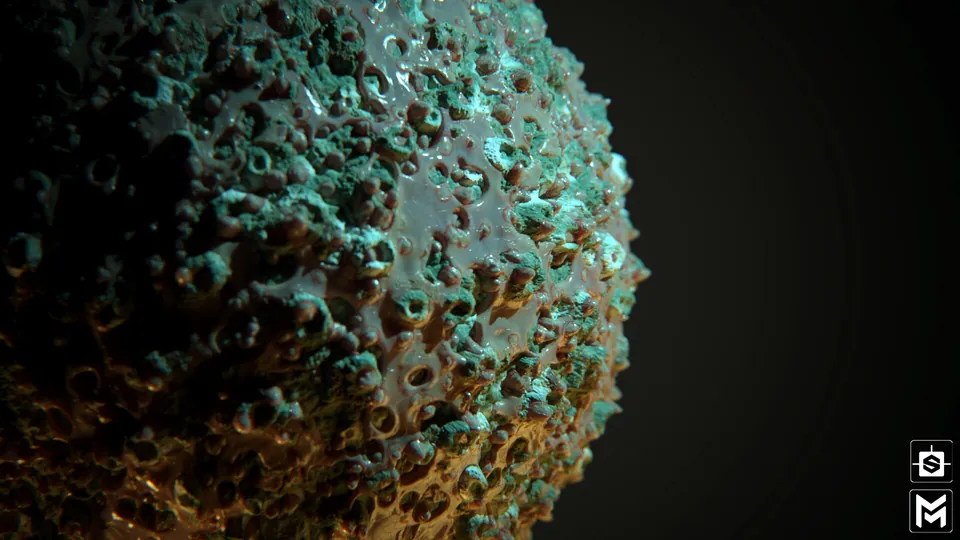

Materials
Anura
Tileable materials made for the game. I really found a love for Substance Designer on this project, and especially enjoyed tackling a more interesting pattern with the sewer tiles.


Freelance
Freelance material work for other student projects at my university, including the award-winning Spire and Uplink, alongside personal pieces I'm most proud of. I learnt a lot alongside some very talented artists, and couldn't miss the opportunity to add the legendary companion cube.





Molded Flesh
Created as freelance work on another student project at my university. They wanted a material they could paint onto characters in Substance Painter and also use around their environments in UE4. Made 100% in Substance Designer and rendered in Maverick. Looking at reference for this was... fun.







Nodevember 2020
I took part in Nodevember again and although university work meant I couldn't keep up all month, I got a lot further than my first time around and learnt so much more. These are some of my favourite pieces.


View on ArtStation: Anura, Freelance, Molded Flesh, Nodevember 2020